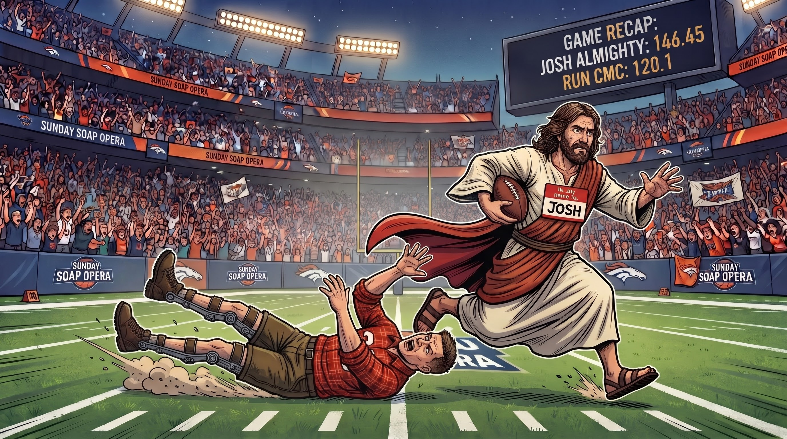

The opening salvo of cross-division warfare unleashed absolute bedlam across The Sunday Soap Opera. In a week where previously undefeated royalty collapsed under the weight of a rogue defensive scheme, two heavyweight division leaders collided in our Matchup of the Week, and Monday Night Football delivered a mathematical resurrection for a cocky White Bronco squad that nearly paid the ultimate price for arrogance.
In our marquee heavyweight clash, Josh Almighty delivered a crushing 146.45 to 120.10 beatdown to hand RUN CMC their second consecutive loss.

If anyone was wondering whether RUN CMC was truly washed, Trevor Lawrence and Josh Allen provided a definitive answer. Lawrence went nuclear with 37.40 points in the QWRT slot, leaving RUN CMC stranded without injured superstar Lamar Jackson. Even with Christian McCaffrey and James Cook III putting up 20+ point performances, RUN CMC couldn't bridge the gap. Josh Almighty surges to 4-2 while RUN CMC plummets into a mid-season identity crisis at 3-3.
In the biggest upset of the 2026 fantasy campaign, 0-5 Three Dots an a Dash shocked the world by annihilating 5-0 Whopper Wentzday 135.05 to 82.90.
Talk about tactical genius! Facing the undefeated division leader, TDnD dusted off two-way star Travis Hunter and plugged him directly into the Cornerback position slot. Hunter delivered 16.90 points, weaponizing his defensive stats while double-dipping on offensive reps—a legal system exploit so flagrant that league historians are calling it the 'Hunter Heist'! Combined with Jayden Daniels' 24.00 points and a 20-point showing from Denver's defense, TDnD's tactical masterclass finally cracked the win column in style. Whopper Wentzday suffered from Jared Goff's bye week and a horrific 4.80-point stinkbomb from Sam Darnold, proving even kings can bleed. Is TDnD back from the dead?
In a heart-stopping Monday Night Football climax, White Bronco pulled off a 100.20 to 97.85 comeback over Kyler Duty.
Talk about playing with fire! White Bronco got insanely cocky entering Week 6, arrogantly choosing to fill only ONE of their defensive player slots and leaving Jack Campbell sitting on bye with a big fat 0.00 in the starting lineup. That disrespect nearly backfired into complete humiliation as Kyler Duty held the lead through Sunday night's Dallas-Green Bay game. Staring down defeat on Monday Night Football, Brock Purdy put the entire franchise on his back, orchestrating a heroic MNF comeback performance in the 49ers game to push Bronco ahead by a razor-thin 2.35 points! White Bronco sits atop the East at 5-1, though rival managers are quick to remind everyone that no amount of late-game luck can permanently ward off the lingering dark cloud of the franchise curse.
The Bi-Managers of Clench Tuxedos continued their hot streak, riding a 160.20-point wave past The Pain Train.
The Bi-Managers showed supreme confidence in starter Tyler Shough, who exploded for 34.40 points to spearhead the offensive assault. In true Bi-Manager fashion, the front office also left C.J. Stroud's 31.10 points parked on the bench, but when your starting lineup drops 160+, who's counting? The Bi-Managers advance to 4-2 while The Pain Train remains stuck on the tracks at 2-4.
Marr Burrow Smokes capitalized on Joe Burrow's bye week by rolling past the tragic Danger Cats 123.00 to 93.60.
What a litter-ally catastrophic disaster for the Danger Cats! Marr Burrow Smokes didn't even have Joe Burrow available on bye, yet they still coughed up a hairball all over the Danger Cats in a 30-point shellacking. The Cats' offense looked completely cat-atonic from top to bottom. Justin Herbert was pussyfooting around the field for a tragic 5.80 points, while Deshaun Watson sputtered for 6.10 in the QWRT slot. When your wide receiver group combines for fewer points than a declawed stray cat—highlighted by D. Boston's 1.50 and A. Brown's 2.70—you deserve to get shoved right into the litter box. Aside from Bhayshul Tuten's 20.70 points, this squad showed zero claws and all paws. Curiosity killed the cat, but leaving 93.60 points on the board is what buried them in the East standings. Time to stop napping on the porch and start playing like real predators!
Steeltown Junkies comfortably handled the Autobots 135.60 to 106.40 behind solid quarterback play.
Drake Maye (33.15) and Kirk Cousins (25.65) formed a lethal one-two punch for Steeltown. The Autobots tried to rely on kicker Tyler Bass's 20.00 points while regular leg-man Will Reichard was on bye, but their lack of skill-position firepower condemned them to a 1-5 record.
Whopper Wentzday Receives: T. McBride (TE), Round 7 Pick
Autobots Receives: D. Goedert (TE), Round 2 Pick
Whopper Wentzday: Grade C+ Autobots: Grade A-
While Whopper secures elite long-term TE upside in Trey McBride, surrendering a prime 2nd-round draft pick while only receiving a 7th in return is an exorbitant price to pay for a position swap. Autobots wins the value game here, stockpiling high-end draft capital while remaining perfectly respectable at TE with Dallas Goedert.
Steeltown Junkies Receives: K. Miller (RB), D. Daniels (QB - Tampa Bay), Round 4 Pick
Marr Burrow Smokes Receives: W. Marks (RB), G. Kittle (TE), Round 11 Pick
Marr Burrow Smokes: Grade A+ Steeltown Junkies: Grade F
An absolute fleece job by Marr Burrow Smokes. Acquiring the current TE1 in George Kittle AND a viable starting RB in Woody Marks while only giving up roster-fringe bench depth (Kendre Miller and Tampa Bay's Daniel Daniels) and a modest pick upgrade to a 4th-rounder is highway robbery. Steeltown liquidated premier, win-now talent for pennies on the dollar.
Projection: White Bronco 137.37, Marr Burrow Smokes 102.85
Gazette Pick: White Bronco 🔮
Marr Burrow Smokes has momentum, but White Bronco's dual-QB engine is scoring too consistently to fade.
Projection: Danger Cats 122.50, RUN CMC 86.41
Gazette Pick: Danger Cats 🔮
RUN CMC is completely reeling. Expect Jahmyr Gibbs and the Cats to capitalize.
Projection: Josh Almighty 98.70, The Pain Train 101.60
Gazette Pick: Josh Almighty 🔮
Ignore the projections—Josh Almighty is operating on a championship level.
Projection: Kyler Duty 104.49, Three Dots an a Dash 66.62
Gazette Pick: Three Dots an a Dash 🔮
With Travis Hunter in the CB slot, TDND's system-exploiting wizardry carries them to a second straight win!
Projection: Clench Tuxedos 134.24, Autobots 83.15
Gazette Pick: Clench Tuxedos 🔮
The Bi-Managers roll over an Autobots team that has completely checked out.
Projection: Steeltown Junkies 90.76, Whopper Wentzday 121.14
Gazette Pick: Whopper Wentzday 🔮
Jared Goff returns from bye, and the King rebounds with a vengeance.